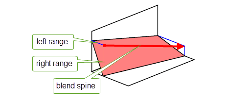
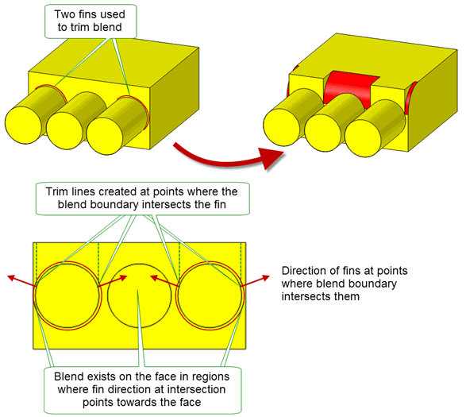

| |
Face-Face Blending |
| <<< Edge Blend Overflows | Chapters | Three-Face Blending >>> |
Chapters 75 to 77 described Parasolid’s support for creating edge blends. In addition to edge blending, Parasolid provides functionality to create blends between two sets of (not necessarily connected) faces. This operation is known as face-face blending.
Figure 78-1 shows an example where two disjoint sheet bodies have been joined together by creating a face-face blend between them.
Figure 78-1 Blending two sets of faces
Face-face blending differs from edge blending as follows:
This chapter provides a complete description of Parasolid’s support for face-face blending. Section 78.2, “Face-face blending concepts”, explains the main concepts involved in face-face blending, and also provides a starting-point for the material in the rest of this chapter.
For an example of disc blends, see the code example in the
C++\Code Examples\Modelling\Blending\Face\Face Blending Overview
folder, located in
example_applications
in your Parasolid installation folder.
|
Note: This functionality does not support facet geometry. |
In a face-face blend, the two sets of faces to blend are known as the left and right walls of the blend. You define a face-face blend between two walls using a combination of the following three independent properties.
|
The two contact points in each cross-sectional plane at which the blend touches the faces being blended. |
Contact points can either be defined implicitly - you specify the size of the blend and let Parasolid calculate the exact contact points, or explicitly - you define a curve that must form one of the boundaries of the blend surface. Blends may be either symmetric (defined using a single parameter), or asymmetric (defined using two parameters). See Section 78.4, “Defining contact points”. |
|
The cross-sectional shape of the curve between the two contact points in the cross-sectional plane. |
You can define a range of cross-sectional shapes in the cross-sectional plane. These fall into three types: |
These properties are illustrated in Figure 78-2.

Figure 78-2 General definition of a face-face blend
In addition to these basic properties of a face-face blend, there are a number of usability factors that determine the final appearance of a blend.
Section 78.1, “Introduction”, explained that the set of faces to be blended in a face-face blend do not need to be adjacent, or even in the same body. This means that there may typically be several different blend solutions possible between any two sets of faces to be blended, depending on the exact nature of the walls supplied. This is in contrast to edge blending, where the blend solution is defined by the convexity of the edge being blended. In order to support this, face-face blends define a number of properties that are not required by edge blends. This section describes these properties and explains why they are important.
When you create face-face blends between face sets from a single solid body, the blend faces can usually only be attached one way round. However, when blending between walls of sheet faces, the orientation of the blend face depends on the direction of the sheet face normals. Depending on those normals (and how you trim the blend - see Section 78.2), you can create very different effects from the same set of walls.
You define the orientation of a face-face blend by specifying a logical sense for both the left and right walls. By convention, if the sense for a given wall is true, then the blend is produced to lie behind the wall, with respect to the normals of the faces in the wall. This is illustrated in Figure 78-3, which shows how four different blends can be created between the same two sets of sheet faces.
Figure 78-3 Specifying different blend faces from the same walls using different senses
|
Note: When you create face-face blends in a solid body, always make the left and right senses equal. |
Even when blending sheet bodies, there are not usually four possible options for the blend orientation.
The first face in the list of faces that defines a given wall is called the master face. By default, in order to maximise performance, a face-face blend must pass through at least one of the two master faces for the blend to succeed.
If a wall consists of a single face, or a set of faces in a single row, this is usually not a problem. However, if a wall has a set of faces in several rows, then the blend may fail, depending on the how big the blend surface is and which faces are the master faces. Figure 78-4 shows the difference between blends that can succeed, and blends which fail because of the position of the master faces.
Figure 78-4 The use of master faces in face-face blends
For certain types of blend, you can turn off the requirement for master faces without having a significant effect on performance. Turning off master faces makes the final example in Figure 78-4 succeed, for example. It can also help to create a series of blends on a body in a single operation. See Section 78.10, “Choosing whether to use master faces”, and Section 78.11, “Dealing with multiple solutions”, for more information on how to do this.
Face-face blends are created using PK_FACE_make_blend, which takes the following arguments:
|
Note: When blending faces from different bodies, the faces in the right wall must not come from an instanced body. If they are from an instanced body, PK_ERROR_instance_body is returned. |
As described in Section 78.2, the cross-sectional planes of a face-face blend are the set of notional planes that pass through the blend surface, and contain the contact points and curve shape for the blend. You can create different blend effects by specifying the way the cross-sectional planes are orientated.
Cross-sectional planes can be orthogonal to either:
The first two of these options are by far the most common. Figure 78-5 shows the difference between them. Figure 78-6 shows an example of the third option.
Figure 78-5 Orientation of cross-sectional planes in rolling-ball blends and disc blends
Figure 78-6 Blending faces using an iso-parametric cross-sectional plane
More information about each type of cross-sectional plane is shown below:
For an example of this functionality, see the code example in the
C++\Code Examples\Modelling\Blending\Face\Disc Cross Section Blends
folder, located in
example_applications
in your Parasolid installation folder.
When specifying a blend, you may need to supply a parameter spine. This is a three-space curve, which in general terms should follow the path of the blend. Which parameter spine to choose depends on the type of cross-sectional plane you are using.
|
Rolling-ball blends do not need a parameter spine unless a law curve has been supplied (see Section 78.4.1.2, “Variable-size face offset blends”). In cases where one is necessary, it should not be too accurate: a straight line between points near the start and the end of the intended blend is often sufficient. If you attempt to approximate to the path of the blend too accurately, the parameter spine may contain regions of tight curvature and the blend may fail. |
|
|
Disc blends always need a parameter spine, since the cross-sectional planes in the blend are orthogonal to the parameter spine. The absolute position of the parameter spine in 3-space need not be accurate, but its direction should be, since this influences the final shape of the blend, as shown in Figure 78-7. |
|
|
For iso-parameter blends, the parameter spine must lie in the left-hand wall. |
For all types of cross-sectional plane, the general shape of the parameter spine is important. For example, if a blend is going to be periodic, the parameter spine must be periodic.
Figure 78-7 Changing a disc blend using different parameter spines
|
Note: It is recommended that you use PK_EDGE_make_curve to create a single smooth continuous curve from a chain of connected edges to a given tolerance. See Section 18.4.14, “Creating a smooth continuous curve”, for more information, |
The options used to define cross-sectional planes are in the
shape
substructure (PK_blend_shape_t) of PK_FACE_make_blends_o_t. They are as follows:
xsection |
|
parameter |
A 3-D parameter curve that defines the parameter spine to use for the blend. Default: PK_ENTITY_null. |
Each cross-sectional plane in a blend contains two contact points, where the blend surface touches the blend walls. You can define where the contact point lies either
This section explains each of these strategies in turn.
One way of defining where the contact points lie in a cross-sectional plane is by specifying how large the blend should be. Based on this information, Parasolid calculates exactly where the boundary of the blend lies, and hence the position of the contact points on each cross-sectional plane.
The size of a blend is specified with reference to the blend spine. For example, in the case of a symmetric rolling-ball blend, the blend spine is the path taken by the center of the rolling-ball as it moves from one end of the blend walls to the other, as shown in Figure 78-8. In the case of a symmetric disc blend, it is the path taken by the center of the swept circle.
|
Note: Do not confuse the blend spine, which describes the exact path taken by a blend, with the parameter spine, which is just a guide to the direction of the blend. |
Figure 78-8 Comparison of blend spine and parameter spine in a rolling-ball blend
There are four separate ways to specify the size of a blend in terms of the distance between the blend spine and the blend walls:
You can also specify the size of a blend in terms of the distance between an apex and the contact points. This is known as apex-range chamfer blends.
You define a
constant-size face offset blend by supplying one or more scalar values that represent the (constant) distance of the blend spine from the blend walls. You assign these scalar values to variables in the
shape
field of the options structure, as described in the following table:
radius |
The distance of the blend spine from both the left and right walls of the blend. (Default 0.0.) |
|
The distance of the blend spine from the left ( |
|
|
How to interpret the values of |
Note: If radius is supplied,
range1_const
and
range2_const
must not be. If either
range1_const
or
range2_const
is supplied, the other must also be. |
When
radius
is used, or when
range1_const = range2_const
, the blend is known as a
constant-radius blend. Constant-radius blends are always symmetric.
You define a
variable-size face offset blend by supplying one or more law curves that represent the (varying) distance of the blend spine from the blend walls. You assign these law curves to arrays in the
shape
field of the options structure, as described in the following table:
Note: If
range2
is supplied,
range1
must also be supplied and the knots of
range2
must be identical to those of
range1
. If either is supplied, you must also supply a parameter spine: see Section 78.3.1 and Section 78.3.2 for details. |
When
range1
is used alone, or when
range1 = range2
, the blend is known as a
variable-radius blend. Variable-radius blends are always symmetric.
Figure 78-9 shows the differences between constant- and variable-size face offset blends. Each can be combined with any kind of cross-sectional plane.
Figure 78-9 Constant-size (a) and variable-size (b) face offset blends
For an example of how to create and use law curves in variable radius blending, see the code example in the
C++\Code Examples\Modelling\Blending\Face\Variable Radius Blending
folder, located in
example_applications
in your Parasolid installation folder.
You can create blends that have a constant chordal width, as shown in Figure 78-10.
Figure 78-10 Constant-size vs. constant-width blends
This type of blend is particularly useful when the angle between the faces to be blended varies along the extent of the blend, but you want to keep the amount of blend material constant along the whole blend. Figure 78-11 illustrates how the shape of the blend changes with the angle for such faces.
Figure 78-11 Blend shape at (a) the start and (b) the end of a constant-width blend
You specify constant-width blends by assigning values to the following variables in the
shape
field of the options structure:
The ratio is interpreted with reference to the left and right walls of the blend, as shown in Figure 78-12.
Figure 78-12 Creating asymmetric constant-width blends using the
ratio
field
As well as combining a constant width with a constant ratio, you can combine a constant width with a variable ratio. See Section 78.4.1.4, “Variable-width blends”, for details.
|
Note: You can produce constant-width blends with either a rolling-ball or a disc cross-section. Constant-width blends cannot be used in conjunction with cliff edges or holdlines (see Section 78.4.2 and Section 78.4.3 for details). |
Like constant-width blends, variable-width blends let you define the contact points of a blend in terms of its chordal width. However, whereas constant-width blends use both a constant width and ratio for the entire extent of the blend, variable-width blends let you vary both the width and ratio of the blend by supplying 1D law functions instead of doubles.
To specify a variable-width blend, use the following fields in the the PK_blend_shape_t structure:
var_width |
A 1D law curve that describes the variable chordal width of the blend at any point along the blend spine. See Figure 78-11 for an illustration of chordal width. |
var_ratio |
A 1D law curve that describes the variable ratio of the blend at any point along the blend spine. The ratio describes the asymmetry of the blend with respect to the left and right walls, as shown in Figure 78-12. |
The
var_width
field can be used in conjunction with either
ratio
or
var_ratio
, to produce a variable-width blend that either has a constant or a variable symmetry, as appropriate. If no ratio is specified at all, then a ratio of 1.0 is assumed.
Figure 78-13 shows the results that you can create by using the different combinations of constant and variable-widths and ratios.
Figure 78-13 Variable-width blends
An apex-range chamfer provides an alternative way of controlling the boundaries of a chamfer blend and can be created by supplying either two offset values, or one offset value and one angle from either the
range1_const
and
range2_const
options in PK_FACE_make_blend. For a definition of apex-range chamfer, see
Figure 76-13 in Chapter 76, “Edge Blending Options”.
The
range1_type
and
range2_type
options indicate how the values of
range1_const
and
range2_const
should be interpreted when creating an apex-range chamfer as follows:
If either
range1_type
and
range2_type
are set to either PK_blend_range_face_offset_c or PK_blend_range_apex_range_c, then:
xs_shape
must be set to PK_blend_xs_shape_chamfer_c
xsection
must be set to PK_blend_xs_rolling_ball_c
run_out
must be set to PK_blend_run_out_no_c and
parameter
must be provided
For information on valid combinations of
range1_type
and
range2_type
, see the table in PK_blend_shape_t.
The
shape
variables described in this section can only be used in the following combinations:
radius
range1
range1
and
range2
range1_const
and
range2_const
width
(and optionally either
ratio
or
var_ratio
)
var_width
(and optionally either
ratio
or
var_ratio
)All remaining variables in each combination must be left at their default values.
As well as defining contact points by specifying the size of the blend, you can specify contact points explicitly, by defining one or both boundaries of the blend.
The boundary of a blend, when specified explicitly, is often referred to as a holdline, because it holds the blend inside the specified line. All holdlines are represented by an array of one or more edges.
You can specify the boundary of a blend using:
You can use tangent holdlines to create variable-radius (symmetric) blends. However, rather than defining how the ranges vary along the extent of the blend, you specify a tangent holdline to use as one of the blend boundaries. Parasolid calculates the blend’s range for the wall that the tangent holdline lies on, based on the tangent holdline and the supplied cross-sectional plane. Parasolid then uses this range to calculate the opposing blend boundary on the other wall, as shown in Figure 78-14.
For an example of this functionality, see the code example in the
C++\Code Examples\Modelling\Blending\Face\Blending with Tangent Holdlines
folder, located in
example_applications
in your Parasolid installation folder.
Figure 78-14 Supplying tangent holdlines to create variable-radius (symmetric) blends
You can supply more than one edge as a tangent holdline.
You can use conic holdlines to create general variable-size blends. A conic holdline only specifies the range of the blend for one wall. The range of the blend for the other wall is specified either:
Figure 78-15 Supplying conic holdlines to create asymmetric conic cross-section blends
A double conic holdline blend is a blend in which the blend boundaries in both walls are specified using a conic holdline. To define a double conic holdline, you must specify at least two edges to use as blend boundaries.
Figure 78-16 Double conic holdline blend
For an example of this functionality, see the code example in the
C++\Code Examples\Modelling\Blending\Face\Blending with Conic Holdlines
folder, located in
example_applications
in your Parasolid installation folder.
Section 78.4.2, “Specifying the boundary of the blend”, described how you can use tangent and conic holdlines to define the entire boundary of a blend. You can also use these holdlines to constrain the boundary locally, along just a part of a blend. To do this you specify both:
Wherever the holdline falls inside the boundary of the defined blend (that is, wherever the holdline creates a smaller blend than the specified blend size), Parasolid ensures the blend follows the holdline, rather than the original blend boundary. This is illustrated in Figure 78-17, which shows a blend that is constrained locally using a curve. In Figure 78-17 (a), this curve is used as a tangent holdline, creating the variable-radius blend shown. By contrast, in Figure 78-17 (b), the same curve is used as a conic holdline, creating an asymmetric variable-size blend.
Figure 78-17 Constraining a blend locally using (a) tangent and (b) conic holdlines
A third way of constraining the boundary of a blend locally is to define a cliff-edge blend. Cliff-edge blends differ from holdlines in one important respect: the blend surface does not have to join the blend wall tangentially along the cliff edge. (Blends with a chamfer cross-sectional shape are an exception to this, since they never join the blend wall tangentially. Any holdline or cliff-edge blend may have a chamfer cross-section. See Section 78.5.2, “Chamfer cross-sections”.)
Cliff-edge blends do not affect the symmetry of a blend.
Figure 78-18 Constraining a blend locally using cliff edges
|
Note: Cliff-edge blends can only be used to constrain a blend locally within a specified area. If you want to use a cliff edge along the entire boundary of a blend, you need to specify another size control for the side that has the cliff edge. This can be either a radius, ranges, or a tangent holdline on the opposite side. This additional size control needs to be large enough that the cliff-edge constraint is used along the entire extent of the blend. See
Figure 78-45 for an example. |
By default, the holdlines and cliff-edge blends described in Section 78.4.2 and Section 78.4.3 are defined with reference to the part of the wall that lies below the specified holdline or cliff edge. Sometimes, it can be useful to specify a blend that is defined with reference to the part of the wall that lies above the holdline or cliff edge. Such a blend is known as an inverted holdline or cliff edge.
Inverting a holdline blend makes the blend tangent to the face above the holdline rather than the face below, as shown in Figure 78-19.
Figure 78-19 Using inverted holdline blends to control the tangency of a blend
Using an inverted holdline lets you create a blend when there is no face below the cliff edge or holdline (for example, on sheet edges), or replace a single face with a blend (for example on the top of a rib), such as the examples shown in Figure 78-20.
Figure 78-20 Using inverted blends to (a) create a blend on a sheet edge (b) replace a face with a blend
|
Note: By default, cliff-edge blends and globally constrained holdline blends are automatically inverted if this is the only valid solution using that edge. If you switch off this behaviour, blends that would have inverted may fail. See Section 78.4.5, “Options”, for more information. Tangent and conic holdlines are not inverted automatically if they are used to constrain a blend locally (as described in Section 78.4.3), regardless of this setting. |
Like holdlines, you can use inverted holdlines to constrain the shape of a blend locally. However, whereas a holdline constrains the blend to follow the boundary that produces the smallest blend radius, an inverted holdline constrains the blend to follow the boundary that produces the largest blend radius.
The difference between these two methods is illustrated in Figure 78-21. In general, using an inverted holdline increases the amount of blend surface that is created. In particular, it can be used to maintain the minimum height of the blend along a wall, which improves the overall appearance of the finished blend, and generally creates a more rigid structure. Figure 78-22 shows a good example of this technique in practice, where an inverted holdline has been used to let the blend surface flow smoothly over the drop.
Figure 78-21 Constraining the blend radius using inverted holdlines
Figure 78-22 Using inverted holdlines to improve blend support
The options used to define the boundary of a face-face blend are in the
constraints
sub-structure (PK_blend_constraint_t) of PK_FACE_make_blends_o_t. They are as follows:
tangent_edges |
|
conic_edges |
|
cliff_edges |
|
inv_tangent_edges |
|
inv_conic_edges |
Section 78.3, “Defining the cross-sectional plane”, explained how you specify the cross-sectional planes in a face-face blend. Section 78.4, “Defining contact points”, explained the different ways that the contact points on those planes can be defined. This section explains how you can specify the shape of the curve that joins the contact points together on the cross-sectional plane.
There are three general types of cross-sectional shape that you can specify:
In addition, you can optionally control:
If necessary, you can let Parasolid infer the cross-sectional shape from other information that you have provided. See Section 78.5.7.
You can create a conic blend between contact points that have been created using any of the methods discussed in Section 78.4, “Defining contact points”.
Without extra information, Parasolid always creates a cross-section that is either a circle or a “least-tension” ellipse. In most cases, this is sufficient. However, if you would like to create a general conic cross-section, such as a hyperbola or a parabola, you need to define
rho
or
rho_const
. See Section 78.5.4 for details.
If you specify a conic cross-section, Parasolid infers the precise nature of the conic based on other information that you give. The following table gives you an idea of how to create blends with certain types of conic cross-section.
|
constant general conic cross-section (symmetric or asymmetric) |
||
|
varying general conic cross-section (symmetric or asymmetric) |
Note: When a law curve is supplied (i.e., for
range1
,
range2
or
rho
), a parameter spine is required for rolling-ball blends. See Section 78.3.1 for details. |
A chamfer cross-section is perhaps the simplest type of cross-sectional shape, since it consists of a straight line between the contact points. Chamfer blends are unusual in that the blend is not tangent to the blend walls.
Figure 78-23 shows an example of a variable-size chamfer blend, although you can create a chamfer blend between contact points that have been created using any of the methods discussed in Section 78.4, “Defining contact points”.
Figure 78-23 Creating a variable-size chamfer blend between two walls
Curvature-continuous blends (also known as G2-continuous blends) have a cross-section that has the same curvature as each wall at the contact points.
If you wish, Parasolid can calculate an appropriate curvature-continuous blend from the supplied contact point data. You can have more control over the precise shape of the blend by passing a depth curve to PK_FACE_make_blend as well. See Section 78.5.5.1 for more information.
You can also control the softness of any curvature-continuous cross-section. See Section 78.5.5.2 for more information.
Curvature-continuous cross-sections can also be used in edge blending. See Section 76.2.2.4, “Controlling cross section shape”, for more information.
You can control the shape of a conic cross-section by supplying a law curve for
rho
or a scalar value for
rho_const
in the call to PK_FACE_make_blend. This defines the positions of the deepest points along the blend, as shown in
Figure 78-24.
Figure 78-24 Using a rho-value to control the curve shape when
rho_type
is set to either absolute or relative
The way the rho-value affects the shape of the cross-section depends on the value of the
rho_type
option that you supply as described in Section 78.5.4.1 and Section 78.5.4.2.
If you specify an absolute
rho_type
(PK_blend_rho_absolute_c, the default), rho is independent of the angle subtended by the blend. A rho-value of 0.5 gives a parabolic solution.
If you specify a relative
rho_type
, rho is relative to the angle subtended by the blend. A value of 0.5 guarantees a least-tension elliptic, or circular, solution, providing you with an easy way of specifying the precise shape of the blend at specific points along the blend. You can use this, for example, to ensure that a blend is circular at one end, so that it meets an adjacent constant-radius rolling-ball blend smoothly.
In general, the value of rho when setting the
rho_type
options absolute and relative is interpreted as follows:
|
Cross-section is an ellipse. As rho approaches 0, the blend becomes flatter, and closer to a chamfer. (Use a chamfer blend if you require a true chamfer: see Section 78.5.2.) |
|
|
If |
|
|
The cross-section is a hyperbola. As rho approaches 1, the blend becomes more L-shaped. |
The allowable values of rho are 0 < rho < 1: note that 0 and 1 themselves are not permitted.
Figure 78-25 illustrates the difference between a rho-value that is interpreted as absolute, and one that is interpreted as relative to the angle subtended by the blend.
Figure 78-25 Specifying absolute and relative rho-values
You can also specify a center
rho_type
, where rho is the radius of curvature at the center of the blend. The supplied rho values directly control the central radius of curvature of the conic cross-section. The center radius must be greater than zero and can be greater than the boundary radius. For symmetric cases, equality between the boundary and center radius will give standard circular blends.
Figure 78-26 illustrates a constant width blend with and without center radius rho values. When a blend has center radius rho values, the radius of the cross-section at the center of the blend is constant along the blend. However, when the blend does not have center radius rho values, the radius of the cross-section at the center of the blend varies along the blend.
Figure 78-26 Specifying the center radius rho values.
Note: If you supply a law curve for
rho
, you must also supply a parameter spine: see Section 78.3.1 for details. |
You can further control the cross-section shape of a curvature-continuous blend. You do this in one of two ways, using the following options:
|
The deepest point of the blend by specifying depth information: |
||
|
How quickly the curvature of the blend changes, by specifying smoothness information: |
Section 78.5.5.2, “Controlling curvature-continuous softness” |
|
Note: You should control the cross-section shape of a curvature-continuous blend using only one of these methods. Do not specify both depth information and smoothness information. |
You can control the shape of a curvature-continuous cross-section by supplying depth and skew information in the call to PK_FACE_make_blend.
The combination of depth and skew are referred to as the depth point, and are illustrated in Figure 78-27.

Figure 78-27 Defining the skew and depth in a curvature-continuous blend
How you specify this information depends on whether the depth and skew values are constant along the length of the blend, or whether they vary:
depth_const skew_const |
For a blend whose depth and skew are constant along the length of the blend, use these fields to specify those values. |
depth |
For a blend whose depth and skew varies along the length of the blend, you need to specify a depth curve. This is represented by a 2D B-curve whose parameter space is that of the portion of the parameter spine in the region of the blend. Each point along the curve contains two parameters that set the position of the depth point as follows: Note: If you supply skew and depth information using
depth
, you must also supply a parameter spine: see Section 78.3.1 for details. |
|
Note: The effect of depth information on the shape of a curvature continuous blend also depends on the position of the parameter spine (see Section 78.3.1) |
You can also control the shape of a curvature-continuous cross-section by supplying a softness value in the call to PK_FACE_make_blend. This value lets you control how quickly the curvature of the blend changes from that of the underlying faces as you move along the blend cross-section (i.e. across the blend surface).
Consider the simple example shown in Figure 78-28.:
Figure 78-28 Controlling the softness of a curvature-continuous cross-section using different softness values
You can also control the shape of the extension of underlying surfaces for G2 and conic blends using the
extension_shape
option. This takes the following values:
|
Note: PK_extension_shape_reflective_c, PK_extension_shape_natural_c and PK_extension_shape_arc_c are not valid for use with this option. |
Information on the result of the extension is reported in a Parasolid Report. The
status
of the record is one of the following:
|
The record lists geometry whose soft extension was used to construct the blend. |
|
|
The record lists geometry that either could not be extended in the blend or contained an internal G2 discontinuity. |
It is possible that a specific geometry will be present in both reports if that geometry has an internal G2 discontinuity and the blend was built on its soft extension.
Note: This option can only be set to PK_extension_shape_soft_c if
xs_shape
is set to PK_blend_xs_shape_g2_c or if the entire blend is non-circular conic. |
See Section 49.1.4, “Specifying the shape of the extension”, for more information on extension types.
Generally, you should specify either conic, chamfer, or curvature-continuous cross-sectional shape explicitly when creating face-face blends. If necessary, however, you can omit this specification, and let Parasolid infer the cross-sectional shape based on the other information you have provided, such as a rho-value, ranges, or a depth curve.
If you do this, then a number of restrictions apply to face-face blending, as follows:
range1
or
range2
.|
Note: You are strongly recommended to supply an explicit cross-sectional shape when defining face-face blends, thereby avoiding all these restrictions. |
The options for controlling the cross-sectional shape of a blend are all contained in the
shape
sub-structure (PK_blend_shape_t) of PK_FACE_make_blend_o_t. They are as follows:
xs_shape |
Specifies the cross-sectional shape of the blend. This can have one of the following values:
|
rho |
A 1-D law curve that describes a general conic cross-sectional shape: see Section 78.5.4 for details. You use this in conjunction with
If you supply a law curve for
If you also supply |
rho_const |
A scalar value that describes a general conic cross-sectional shape; this is the special case where |
rho_type |
A value that determines how the supplied
See Section 78.5.4 for more information. |
depth |
A 2-D law curve that describes a curvature-continuous cross-sectional shape. You can use this to control the shape of a curvature-continuous cross-section. See Section 78.5.5.
If you supply a law curve for |
softness |
A number that controls the softness of a curvature-continuous blend. See Section 78.5.5.2.
The default value is 1.0. If you set this to any other value, |
Once a blend has been created, it needs to be trimmed appropriately to any surrounding geometry. Parasolid supports:
Figure 78-29 Trimming blend faces and blend walls
You need to specify how blend faces should be trimmed to the boundaries of the blend walls. This is done using the
trim
option (PK_blend_trim_t) in PK_FACE_make_blend_o_t, which takes the following values:
|
Trim blend faces to walls (the default). The blend is terminated by curves chosen such that the side boundaries are the correct lengths for attaching to both walls. |
|
|
Do not trim blend faces. The blend faces are created so that they extend beyond the underlying walls. |
|
|
Long trim to walls. The ends of the blend are created using constant parameter lines determined by the wall boundaries such that the blend is as long as possible. |
|
|
Short trim to walls. The blend is created such that the blend end boundaries are the constant parameter lines determined by the wall boundaries such that the blend is as short as possible. Short trim blends can be attached internally to multiple face sheet bodies and to solid bodies. Blends are capped using planar capping surfaces as required, as shown in Figure 78-31.
The |
These are illustrated in Figure 78-30.
Figure 78-30 Trimming blend faces to walls

Figure 78-31 Before (a) and after (b) attaching short trim blends internally
You need to specify whether to trim the walls back to where they meet the blend face, as shown in
Figure 78-32, and in what form you want the walls and blend returned. You do this using the
walls
option (PK_blend_walls_t) in PK_FACE_make_blends_o_t, which takes the following values:
|
Does not trim either of the walls. The blend is not attached to the walls and is returned as a separate sheet body. |
|
|
Trims both walls, but does not attach the blend to the walls. The blend is returned as a separate sheet body. You can only use this token if you are blending between two sheet bodies. |
|
|
Trims both walls and attaches the blend to the walls.
|
|
|
Trims both walls, attaches the blend to the walls, and creates a solid body if possible. This is the same as PK_blend_walls_attach_c, except that if the result of the blending operation forms a closed volume, a solid body is created. This token can only be used in conjunction with PK_blend_trim_to_walls_c. |
|
|
Returns a sheet body which corresponds to the blend that would have been created and attached if the The operation will only succeed if it would have succeeded with the option set to PK_blend_walls_attach_c. |
Figure 78-32 Trimming walls to blend faces
If you choose to have the blend returned as a separate sheet body, PK_FACE_make_blend can create this body in a separate partition that you specify in the
partition
field of the options structure. This can be useful if you wish to keep data solely for displaying and previewing purposes in a separate partition from modeling data inside your application; it is also faster than creating the sheet body in the current partition and then moving it via PK_BODY_change_partition. By default,
partition
is set to PK_PARTITION_null and the partition holding the body that contains the faces of the left-hand wall is used to store the newly created sheets.
Note: If PK_FACE_make_blend returns PK_fxf_fault_sheet_c, the blending operation was only partially successful and the new faces will be returned as a sheet body
regardless of the value of
walls
. If
partition
is set to a non-default value, the specified partition will be used to hold the new sheet body. |
As well as supplying options to trim the blend faces and walls, you can supply a plane to trim the end of a blend. This can be done in two ways, each producing different results:
If you supply limit planes, the blend face is trimmed along a constant parameter line that is calculated from the point at which the supplied plane intersects the blend spine, as shown in Figure 78-33. The blend is trimmed to lie on the positive side of the plane.
Figure 78-33 Blend trimmed to a limit plane
You can either supply one plane in the field
limit_1
, or two in
limit_1
and
limit_2
. If you supply one plane, it can be used to determine the start or end of the blend, and if you supply two they are used to determine both ends.
Sometimes, the planes supplied in
limit_1
and
limit_2
intersect the blend spine more than once. In such cases, you can use
localise_limit_planes
in PK_blend_constraint_t to ensure that the blend is only trimmed at one of these intersections.
localise_limit_planes
is PK_LOGICAL_false (the default), then Parasolid chooses how to trim the blend based on where the planes intersect the blend spine.
localise_limit_planes
is PK_LOGICAL_true, then the blend is trimmed only once for each plane: at the intersection between the plane and the blend spine that is closest to the plane’s location vector (i.e the
location
field from the
basis_set
in the definition of the plane returned by PK_PLANE_ask). Figure 78-34 illustrates the difference between a default blend trim and a localised blend trim for a simple case involving a single limit plane.
Figure 78-34 Controlling blend trims
You can use the
limit_topols
field in PK_blend_constraint_t to trim a face blend at any points that it intersects a set of specified edges or faces on the body using an isoparameter plane. To use this option, specify an array of fins or faces in the
limit_topols
array. Wherever the blend boundary intersects an entity in this array, a trim line is created along a constant parameter line . The “direction” of the fin at the point of intersection then determines which side of the trim line the blend exists on: blend face is present wherever the fin “points towards” its owning face.
Figure 78-35 shows a simple example. Here, a single fin on the horizontal face is used to trim the blend along the line shown. The “direction” of the fin determines where the blend is present and where it is not.
Figure 78-35 Trimming a blend to a face or edge on the body
Figure 78-36 shows a more complex example where two circular fins on a planar face are used to trim the blend. Here, four trim lines are found: each fin intersects the blend boundary twice. The regions where the blend is present are then determined from the “direction” of the fins at each trim line.
Figure 78-36 Trimming the blend at several points using more than one fin
Note: In the
unders
structure returned by PK_FACE_make_blend, any cap faces created are tracked to fins if you have explicitly specified fins in the
limit_topols
array, and the cap face has arisen from using them to trim the blend. Otherwise, edges are used instead. |
Another way you can trim blends is by supplying existing faces (or, alternatively, planes) that trim the blend along the line of intersection between the blend and the supplied face or plane; these are known as capping faces or capping planes, as appropriate. This method is useful in situations where there is more than one possible configuration after the blending operation; the use of capping faces can help determine which configuration Parasolid will produce.
You specify any capping faces using the
n_caps
and
caps
fields in the
constraints
substructure of PK_FACE_make_blend_o_t. (If no values are present, no capping faces are used.) Each face in the
caps
array requires a corresponding logical value in the
reverse_cap
array, which determines the direction in which the blend is trimmed. Setting an element of
reverse_cap
to PK_LOGICAL_false implies that the section of the blend in front of the capping faces (i.e., pointed at by the face normals) is to be trimmed off. Setting an element of
reverse_cap
to PK_LOGICAL_true implies that the area behind the corresponding capping face is to be trimmed off, as if the face normal had been reversed.
Figure 78-37 Example of a blend that is only possible through the use of capping faces
Figure 78-38 Example of a blend that gives different results if a capping face is used
In
Figure 78-37, the chosen blend cannot be done without the use of a capping face; note that the entry in
reverse_cap
must be set to PK_LOGICAL_true in this example. In
Figure 78-38, the blend can succeed without using the capping face (with the walls as indicated), giving configuration (a). The use of a capping face allows you to have configuration (b) as your result, provided that the entry in
reverse_cap
is set to PK_LOGICAL_false.
Figure 78-39 illustrates the difference between specifying a limit plane (as described in Section 78.6.3) and specifying a capping plane. In the example, the same plane is used to limit the blend using each method, with the difference in results clearly visible.
Figure 78-39 The difference between limit planes and capping planes
You can use the
run_out
and
run_out_angle
options to stop a blend when the angle subtended by the blend becomes too shallow. Chord width blends, in particular, can sometimes fail in areas where the underlying faces meet smoothly. By using these options, you can stop the blend before it reaches such areas, thereby allowing the blend to succeed.
The
run_out
and
run_out_angle
options take the following values:
run_out |
Whether or not to stop the blend at the point where the blend becomes too shallow. This takes the following values:
|
run_out_angle |
The angle, in radians, at which the blend should be stopped if |
Figure 78-40 shows a simple example where the angle subtended by the blend becomes shallower along the length of the blend, finally stopping the blend short at the point where it equals the specified
run_out_angle
.
Figure 78-40 Trimming a blend when the angle subtended by the blend becomes too shallow
|
Note: You should not use these options when specifying wire-face blends (see Section 78.21), ribs (see Section 78.12), or a user-supplied surface (see Section 78.20). |
As described in Section 78.6.1, “Trimming blend faces”, you can specify how blend faces can be trimmed to the boundaries of blend walls using the
trim
option.
If you trim a blend so that one side ends at a laminar edge but the other side ends in the middle of the wall (by using PK_blend_trim_short_c or by supplying a laminar edge in
limit_topols
), you can use the
imprint_complete
option to complete the blend boundary on the opposite side beyond the blend face itself so that it trims the wall as far as its laminar boundary.
Figure 78-41 illustrates the use of this option. When set to PK_imprint_complete_laminar_c, the blend boundary is completed and the excess material is trimmed. When set to PK_ imprint_complete_no_c, the blend boundary is not completed.
For more information on
imprint_complete
, see Section 51.4.1.1, “Completing imprints”.
Note: When using
imprint_complete
for face blending, only the option values PK_ imprint_complete_no_c and PK_imprint_complete_laminar_c can be used. |
Figure 78-41 Trimming overhangs when blending between sheets
Parasolid provides functionality for propagating face-face blends between adjoining faces in a body. This simplifies face-face blending by allowing you to specify just a single face in each wall you want to blend; Parasolid can then choose which other faces should be included in the walls in order to propagate the blend as far as possible.
For example, Figure 78-42 shows a body in which only two faces were specified as walls. The blend that was created from these walls was then propagated as far as possible, creating the result shown.
Figure 78-42 Propagating face-face blends
|
Note: You cannot use propagation with face-face blends that have an iso-parametric cross-sectional plane. You can only propagate disc blends if a propagation angle has been set, as described in Section 78.8.1, “Propagating across sharp edges”. |
Propagation is invoked using the
propagate
option, which takes two values:
By default, propagation only works if the faces along which you are blending meet smoothly at any intervening edges, as can be seen in
Figure 78-42, where propagation ends at the two sharp edges in the body. You can control the tolerance to within which the edges between faces are considered smooth using the
tolerance
option in PK_FACE_make_blend_o_t.
Note: Parasolid uses both tolerance information on the edges between faces and the
tolerance
specified in PK_FACE_make_blend_o_t to determine whether faces meet smoothly at intervening edges. |
If there are any edges between faces in the supplied walls that Parasolid considers to be sharp, the resulting face-face blends are automatically propagated across them. Figure 78-43 shows an example where Parasolid automatically propagates across the four sharp edges, because all four side faces are supplied in the right wall.
Figure 78-43 Automatically propagating across sharp edges in the supplied walls
If the sharp edge is not between two faces in the supplied walls, you can force propagation to flow across it, as shown in
Figure 78-44. To do this, set
have_propagation_angle
to PK_LOGICAL_true and specify the largest angle across which you want propagation to flow using the
propagation_angle
option.

Figure 78-44 Propagating blends across sharp edges using
propagation_angle
|
Note: The following restrictions apply when propagating across sharp edges: |
Propagation also works in conjunction with holdlines and cliff edges, as described in Section 78.4. This means that you can specify just the first edge in a chain of edges that make up a holdline or cliff edge. If you use propagation, and you have specified holdline or cliff-edge data, then size constraints are maintained across any faces that are added to the walls as a result of propagation. Inverted cliff edges or holdlines only propagate to other inverted cliffs or holdlines.
In Figure 78-45, by providing the walls and cliff edge shown, and a large radius, propagation creates the face-face blends shown. The cliff edge is maintained along the extent of the blend because of the size of the radius.
Figure 78-45 Propagating cliff edges
Sometimes you might want to create a face-face blend that extends past a notch, rather than one that stops as soon as it encounters the notch. You can do this using the
notch
option in PK_FACE_make_blend_o_t, which blends across any notches found in either the middle or the end of a wall.
Figure 78-46 illustrates a successful notch overflow in the middle of a blend. In this case, if
notch
is PK_LOGICAL_false, the blend face that is created cannot be successfully attached to the body, and is returned as a separate sheet.
Figure 78-46 Notch overflow in the middle of a blend
A notch overflow at the end of a blend occurs when all of one side of a blend face at the end of the blend is trimmed away. This is shown in
Figure 78-47. In this example, if
notch
is PK_LOGICAL_false, then only the first face in the right wall is blended, because the notch occurs while the blend is still in this face. The next face in the right wall is then extended to cap the blend. If
notch
is PK_LOGICAL_true, the blend is extended along all the faces in the right wall.
Figure 78-47 Notch overflow at the end of a blend
Section 78.2.1.2, “Master faces”, described the use of master faces in face-face blending. By default, Parasolid insists that a face-face blend passes through one of the master faces defined by the specified blend walls. This can improve performance, but can also sometimes limit the number of solutions possible for the blend data specified (or even make it not possible for a solution to be found).
If you are creating constant radius rolling ball blends with no holdlines or cliff edges, you can switch off the requirement to use master faces using the
master_faces
option in PK_FACE_make_blend_o_t. When master faces are switched off, Parasolid successfully creates a face-face blend between walls even if the blend created does not pass through the first face in either wall. This enables Parasolid to create face-face blends in a wider variety of configurations, leading to fewer blend failures. The effect of switching master faces off is shown in
Figure 78-48.
Figure 78-48 Creating face-face blends that do not pass through master faces
The
master_faces
option takes the following values:
Switching master faces off is particularly useful in cases where you want to create all possible blends between two walls, and you have switched on the
multiple
option, as described in Section 78.11, “Dealing with multiple solutions”. This is dealt with in more detail in Section 78.11.4, “Interaction with master faces”.
Note: You must only use a non-default value for
master_faces
if you are creating constant radius rolling ball blends, and if you have no holdlines or cliff edges specified. |
In some cases, the data you pass to PK_FACE_make_blend may contain ambiguous information. Depending on the nature of that information, this can help you create complex blend sequences in a single call, or it may cause blending to fail altogether. For example:
This section describes the options Parasolid provides to help you to create multiple blends in a single call, or to overcome ambiguities in cases where blending may otherwise fail.
Figure 78-49 shows an example in which there are two possible face-face blends. In order to blend the walls indicated, you must do one of the following:
Figure 78-49 Multiple face-face blends
If you do neither of these, Parasolid creates only one blend, but does not guarantee which blend it creates.
A help point is a 3-space vector that is used to distinguish between multiple possible solutions. Parasolid creates whichever blend lies closest to the supplied help point. You should try to make any help points lie as close to the desired blend face as possible; the further away a help point is, the harder it is for Parasolid to identify the correct blend face.
By default, Parasolid only returns one set of blend faces.
In cases where there are conflicting multiple blends, you must supply a help point if you want to have any control over which of the conflicting blends is attached to the body. For example, if you specify several holdlines that lie in the same wall (as shown in
Figure 78-50), you must supply a help point if you want to attach one of the blends. If you do not want to attach a blend (i.e., if
walls
is PK_blend_walls_trim_no_c or PK_blend_walls_trim_both_c), then Parasolid returns all solutions if you do not supply a help point. You cannot attach multiple conflicting blends to a body.
Figure 78-50 Resolving conflicting holdline data using help points
|
Note: You can also supply a help point to identify a position at which to generate a blend rib. See Section 78.12, “Generating blend ribs”, for full details. |
The options used to deal with multiple solutions are in PK_FACE_make_blend_o_t. They are as follows:
multiple |
Whether or not to create multiple blends. The default is PK_LOGICAL_false. |
have_help_point |
Whether or not a help point is supplied in |
help_point |
A 3-space vector that represents a help point that PK_FACE_make_blend can use to resolve any ambiguity in the supplied data. If a help point is supplied, you should set Alternatively, this can represent the position at which you want to generate a blend rib. See Section 78.12, “Generating blend ribs”, for details. |
Note: In general, if you are specifying a help point, we recommend that
master_faces
is set to PK_blend_use_master_faces_no_c. For more information, see Section 78.11.4, “Interaction with master faces”. |
Not all combinations of values of the
multiple
and
have_help_point
options make sense. In addition, combining the use of these options with the
master_faces
option can produce subtly different results.
The following tables show which combinations of values are allowed and recommended and describe the differences in the expected results.
If
master_faces
is set to PK_blend_use_master_faces_no_c:
If
master_faces
is set to PK_blend_use_master_faces_yes_c:
Section 78.10, “Choosing whether to use master faces” for more information about using master faces during face-face blend operations.
Figure 78-51 shows an example in which two blends are possible, but only one of these blends passes through a master face. By switching off the requirement for master faces and using
multiple
to request multiple blends, you can create both blends in a single call to PK_FACE_make_blend. Leaving
master_faces
at its default setting results in only a single blend being created, regardless of the value of
multiple
.
Figure 78-51 Creating all possible blends between two sheets
Parasolid can also produce blend ribs instead of, or as well as, blend surfaces in face-face blending. Blend ribs are geometric cross-sections of a blend surface, as shown in Figure 78-52. In general blend ribs are curves, though points are returned if the blend surface is degenerate.
|
Note: You cannot create blend ribs for constant radius rolling-ball blends. |
By passing blend ribs to a more general-purpose surface creation tool, you can use them to create surfaces in regions where true blend surfaces cannot be produced, such as regions of tight curvature. For example, if an underlying surface has a tight, narrow crease which causes blending to fail, you can generate ribs and use them to create a surface which approximates the blend.
Alternatively, you can produce blend ribs as a way of creating a preview of a blend, prior to actually applying the blend.
Figure 78-52 Producing blend ribs instead of a blend surface
|
Note: You can only produce blend ribs if you also supply a parameter spine. See Section 78.3.1, “Supplying a suitable parameter spine” for more information. |
You can choose to produce ribs either:
You can also control how ribs are distributed by grouping them together in a number of ways, and specifying a maximum number of ribs to produce in each group. Ribs are distributed as evenly as possible within each group.
You specify how you want blend ribs to be produced using the
rib_control
structure (PK_blend_rib_control_t) in PK_FACE_make_blend_o_t. This contains the following options:
output_rib |
Under what conditions to generate blend ribs. This can take the following values:
|
group_rib |
How to group the ribs that are generated. This can take the following values:
|
max_n_ribs |
The maximum number of ribs to produce in each group. Ribs are distributed across the group as evenly as possible. If |
n_interval_parms |
|
interval_parms |
This allows you to specify groups explicitly by defining intervals along the parameter spine that represent the boundaries of each group. The first member of the array defines the start of the first interval, the second member the end of the first interval and the start of the second, and so on. For example, a set of
The |
Ribs are returned in the
ribs
field (PK_blend_rib_r_t) of PK_FACE_make_blend. This contains the following fields:
If you have supplied a partition in the
partition
field of PK_FACE_make_blend_o_t, then the ribs are returned in that partition.
|
Note: For blends which produce multiple sheets, two ribs may share the same parameter, but will never share the same index. |
To ensure validity of the resulting body, Parasolid can carry out a series of local checks when creating face-face blends.
You can use the
checks
structure (PK_blend_local_check_t) in PK_FACE_make_blend_o_t to control which of these checks to perform. The default value for each field in
checks
ensures that no local checking is performed by default, so as to maximise performance.
PK_FACE_make_blend_o_t also contains a
local_check
option that provides a quick way of turning on common checking functionality. If you set
local_check
in PK_FACE_make_blend_o_t to PK_LOGICAL _true, the following local checking is performed:
The table below summarises the fields in the
checks
structure, together with their default values and their values when
local_check
is PK_LOGICAL_true.
|
For face-face blending: PK_blend_check_su_X_not_bsurf_c For edge blending: PK_blend_check_su_X_no_c |
||
If
local_check
is PK_LOGICAL_false, the faces of all self-intersecting surfaces detected are returned in a Parasolid Report of type PK_REPORT_record_1_t with a status of PK_REPORT_1_blend_faces_sx_c. See Chapter 11, “Using Reports”, for more information about the Parasolid Report mechanism
For more information on Parasolid’s checking capability, see Chapter 31, “Checking”.
You can request that Parasolid attempts to repair any self-intersecting areas in blend surfaces using the
repair_su_X
option in PK_FACE_make_blend_o_t. When set to PK_blend_repair_su_X_yes_c or PK_blend_repair_su_X_report_c, Parasolid creates suitable faces to patch self-intersecting regions in any constant-size rolling-ball blends, as shown in
Figure 78-53.
Figure 78-53 Repairing self-intersecting blend surfaces
As well as attempting to repair self-intersecting blends, you can request that Parasolid reports whether any surfaces have been repaired using the
report
option. See Section 78.18, “Reporting repaired blend faces” for more information on this option.
In addition, when
repair_su_X
is either PK_blend_repair_su_X_yes_c or PK_blend_repair_su_X_report_c, the faces of all self-intersecting surfaces that were unable to be repaired are returned in a Parasolid Report of type PK_REPORT_record_1_t with a status of PK_REPORT_1_blend_faces_sx_c. See Chapter 11, “Using Reports”, for more information about the Parasolid Report mechanism.
Parasolid can attempt to repair any self-intersecting blend faces created after a call to PK_FACE_make_blend; this is similar to the repairing done after local operations such as offsetting and tapering. The
repair_fa_X
field of the options structure is used to specify whether Parasolid should attempt to repair self-intersecting blend faces.
|
|
Figure 78-54 shows an example of a blend operation that can be completed successfully by setting
repair_fa_X
to PK_blend_repair_fa_X_yes_c. If
repair_fa_X
is set to PK_blend_repair_fa_X_no_c, the operation fails.
Figure 78-54 Successful blend with
repair_fa_X
set to PK_blend_repair_fa_X_yes_c
You can use the
inside_tight
option (PK_blend_inside_tight_t) to create blends on the inside of faces that contain tight regions: that is, regions that have a smaller radius of curvature than the blend being created. You can create blends across faces that are tight across the whole of the face, or across only a part of it, as shown in
Figure 78-55.
Figure 78-55 Blending around tight corners
Parasolid lets you choose between the following values:
Note: The
inside_tight
option has the following restrictions:
|
Sometimes, sharp edges between blend faces may result from the mathematical definition of the blend. In particular, this can happen:
You can use the
prevent_sharp
option (PK_blend_prevent_sharp_t) to request that Parasolid tries to prevent such sharp edges from being created in a chain of blends.
If you use this option, sharp edges are prevented by making small changes to the interior of the blend faces. Edges that form the outer boundary of the set of blend faces are not modified.
When creating blends as, or on, sheet bodies, you can use the
track_edges
option to track the laminar edges of a blend back to the entities that they were created from. If you set
track_edges
to PK_blend_track_edges_laminar_c, then the laminar edges of any blend face are returned in the
blend_topols
array, and the associated underlying entities (which may consist of faces, edges, fins, or planes) are returned in the corresponding positions of the
unders
array.
By default, laminar edges in blend faces are not tracked.
You can use the
report
option in PK_FACE_make_blend_o_t to control whether to save information about blend faces that are repaired in a Parasolid Report.
By default, information about repaired blend faces is not saved. However, if you set
report
to PK_blend_report_repaired_yes_c, then a record of type PK_REPORT_record_type_1_c is written to the Parasolid Report. This record lists any faces whose surfaces have been repaired by PK_FACE_make_blend_o_t because the definition of the blend would result in an invalid or unsuitable surface. The
status
of the record is set to one of the following:
See Chapter 11, “Using Reports” for more information about the Parasolid Report mechanism.
If your application relies on reproducing behaviour when updating models created using earlier versions of Parasolid, you should use the
update
option to preserve old behaviour and help eliminate differences in rebuild results. This option lets you disable some surface extension enhancements that have been added at different Parasolid versions. Doing this ensures that face-face blending gives the same results in the latest version of Parasolid as in earlier versions. See PK_blend_update_t in the
PK Interface Programming Reference Manual for more information on this
update
option.
|
Note: The default value is PK_blend_update_default_c which uses all appropriate blending enhancements. Setting to a non-default value disables all appropriate blending enhancements. |
Rather than have Parasolid generate a blend surface, you can supply a surface to use in a blend operation using the
user_surface
field of PK_FACE_make_blend_o_t. When using this option, you should provide consistent
left_sense
and
right_sense
flags. If you don't, then Parasolid attempts to create a valid model, but may fail. See Section 78.2, “Face-face blending concepts”, for more information about the sense of a blend.
In order for the blend to succeed, the surface you supply must:

Figure 78-56 Blending faces with a user-supplied surface
It is possible to make a cliff-edge blend between a wall of faces and the edges of a wire body. This is called a
wire-face blend. To make a wire-face blend, you should provide no faces for one of the walls; instead provide edges from a smoothly connected manifold oriented wire body as
cliff_edges
in the
constraints
field of the options structure. You can ensure the wire body is correctly oriented by using PK_EDGE_propagate_orientation.
Figure 78-57 Example of a wire-face blend
You should determine the
left_sense
or
right_sense
variable (as appropriate) for the wall replaced by edges (from the wire) relative to the cross-product of the face normals (of the other body) and the tangents of the edges, in that order. (For calculating the sense, this cross-product vector takes the place of a face normal when a wall is replaced with edges.) In the example given in
Figure 78-57, the cross-product is shown in red and replaces the face normal for the right wall. The blend lies in the direction of this vector, hence
right_sense
is PK_LOGICAL_false. (The blend also lies in the direction of the face normals for the left wall, hence
left_sense
is also PK_LOGICAL_false.)
The following restrictions apply to the options available for wire-face blends:
trim
field must be PK_blend_trim_short_c and
walls
must be either PK_blend_walls_trim_no_c, PK_blend_walls_preview_c, or PK_blend_walls_attach_c.
shape
field, only
radius
may differ from its default value.
constraints
field, all edges in
cliff_edges
must be from the wire body;
tangent_edges
,
conic_edges
,
inv_tangent_edges
and
inv_conic_edges
should not be supplied.
rib_control
must be left at their default values.
master_faces
,
user_surface
,
repair_su_X
,
inside_tight
,
have_propagation_angle
and
repair_fa_X
fields must be left at their default values.In summary, this chapter has given you a complete description of Parasolid’s face-face blending functionality.
Figure 78-58 Blending two walls of faces
To return to the example used at the very beginning of the chapter, the disjoint bodies shown in Figure 78-58 have been blended as follows:
xsection
option was set to PK_blend_xs_rolling_ball_c in order to create a rolling-ball cross-sectional plane.
radius
field was set to create a constant-radius blend
left_sense
and
right_sense
were PK_LOGICAL_true.
trim
option was set to PK_blend_trim_to_walls_c in order to trim the blend faces to the specified walls.
walls
option was set to PK_blend_walls_attach_c in order to attach the blend faces to the specified walls, so that a single body could be created from the two disjoint bodies.
propagate
option was set to PK_blend_propagate_yes_c, to ensure that the blend propagated as far as possible.| <<< Edge Blend Overflows | Chapters | Three-Face Blending >>> |